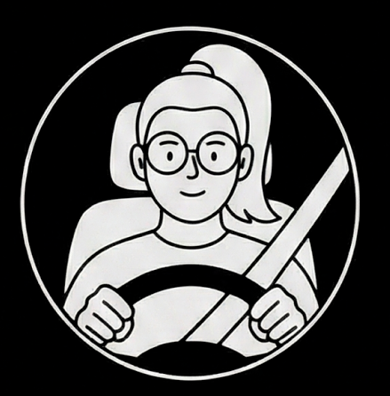
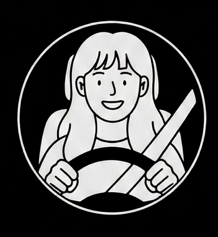
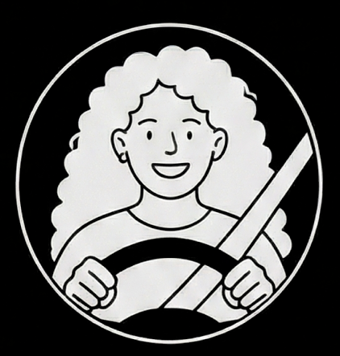
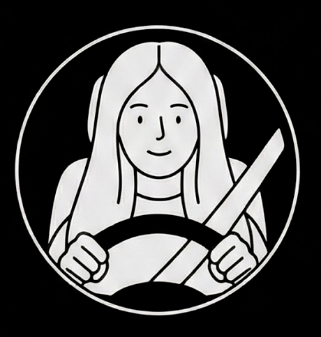
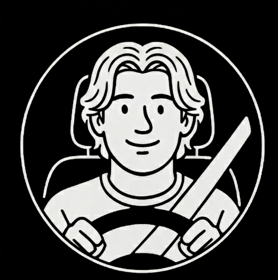
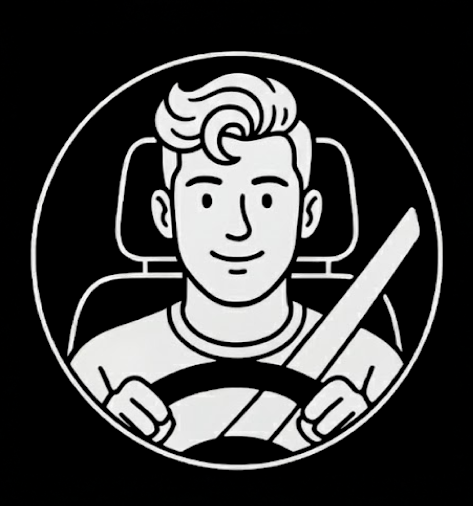

Siamo un gruppo di ragazzi che, osservando ogni giorno i rischi legati alla circolazione stradale e la frequenza con cui si verificano incidenti, ha deciso di approfondire il tema della sicurezza stradale per comprenderne la reale portata. La presenza costante di episodi sulle strade italiane ci ha spinto a interrogarci sulla dimensione del problema e sulle sue conseguenze.
Il progetto nasce dal desiderio di analizzare in modo approfondito le dinamiche degli incidenti stradali in Italia, mettendo in evidenza cause, circostanze e contesti in cui si verificano con maggiore frequenza.
Attraverso lo studio del dataset ISTAT e la realizzazione di visualizzazioni interattive, i dati diventano uno strumento per raccontare diversi scenari di rischio e favorire una maggiore consapevolezza e responsabilizzazione nei comportamenti quotidiani.






Laurea Triennale in Design della Comunicazione
Laboratorio di Computer Grafica per l’Information Design
Anno Accademico 2025/2026